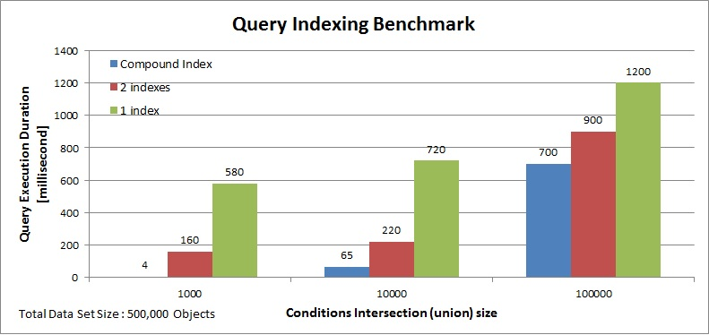

A Compound Index is a Space index composed from several properties or nested properties (a.k.a. paths). Each property of a compound index is called a segment and each segment is described by its path. The benefit of using a compound index is shorter scanning of potential matching entries - which is equivalent to the intersection of all the entries having the values described by the segments. In other words - when having a set of objects within the Space where:
Using a Compound Index that will be based on field X and field Y will improve a query evaluating Condition C significantly.
An attribute can be a segment of several compound indexes, and can be indexed itself. Compound indexes can be only EQUAL indexes - they support equality-based queries only. The name of the compound index is composed from the paths of its segments separated by a "+" sign.
The benchmark has a space with different sets of Space objects data:
| Condition | Scenario 1 matching objects | Scenario 2 matching objects | Scenario 3 matching objects |
|---|---|---|---|
| data1 = "A' | 401,000 | 410,000 | 400,000 |
| data2 = "B' | 100,000 | 110,000 | 200,000 |
| data1 = "A' AND data2 = "B' | 1000 | 10,000 | 100,000 |
SqlQuery<Data> query = new SqlQuery<Data>("data1='A' and data2='B'");
With the above scenario, the Compound Index will improve the query execution dramatically. See the comparison below for query execution time when comparing a Compound Index to a single or two indexed properties Space class with the different data set scenarios.

If one of the query conditions makes use of the IN operator, compound indexes will be ignored. Separate indexes should be created.
Compound indexes can be defined using annotations. The CompoundSpaceIndex annotation should be used. The annotation is a type-level annotation.
Example
The following is a compound index with two segments using annotations. Both are properties at the root level of the Space class:
[CompoundSpaceIndex(Paths = new[] {"IntProp", "StringProp"})]
[CompoundSpaceIndex(Paths = new[] {"LongProp", "StringProp" })]
public class WithCompoundIndex
{
[SpaceID(AutoGenerate = true)]
public String Id { get; set; }
public int IntProp { get; set; }
public String StringProp { get; set; }
public long LongProp { get; set; }
}
A Compound Index can be defined within the gs.xml configuration file.
Example
The following a gs.xml describing a Class named WithCompoundIndex having a compound index composed from two segments:
<!DOCTYPE gigaspaces-mapping PUBLIC "-//GIGASPACES//DTD GS//EN" "http://www.gigaspaces.com/dtd/9_5/gigaspaces-metadata.dtd">
<gigaspaces-mapping>
<class name="WithCompoundIndex" >
<compound-index paths="IntProp, StringProp"/>
...
</class>
</gigaspaces-mapping>
You can add a Compound Space Index to a Space document.
Example
using GigaSpaces.Core;
using GigaSpaces.Core.Metadata;
using GigaSpaces.Core.Document;
// .....
SpaceTypeDescriptorBuilder descriptorBuilder = new SpaceTypeDescriptorBuilder("WithCompoundIndex");
descriptorBuilder.AddFixedProperty("IntProp", typeof(int));
descriptorBuilder.AddFixedProperty("StringProp", typeof(String));
descriptorBuilder.AddFixedProperty("LongProp", typeof(long));
descriptorBuilder.AddCompoundIndex(new []{ "IntProp", "StringProp" });
descriptorBuilder.AddCompoundIndex(new []{ "LongProp", "StringProp" });
When a read, take, read multiple, or take multiple call is performed, a template is used to locate matching Space objects. The template might have multiple field values - some might include values and some might not (i.e. null field values acting as wildcards). The fields that do not include values are ignored during the matching process. In addition, some class fields might be indexed and some might not be indexed.
When multiple class fields are indexed, the space looks for the field value index that includes the smallest amount of matching Space objects with the corresponding template field value as the index key.
The smallest set of Space objects is the list of objects to perform the matching against (matching candidates). After the candidate's Space object list has been constructed, it is scanned to locate Space objects that fully match the given template - i.e. all non-null template fields match the corresponding Space object fields.
Class fields that are not indexed are not used to construct the candidate list.